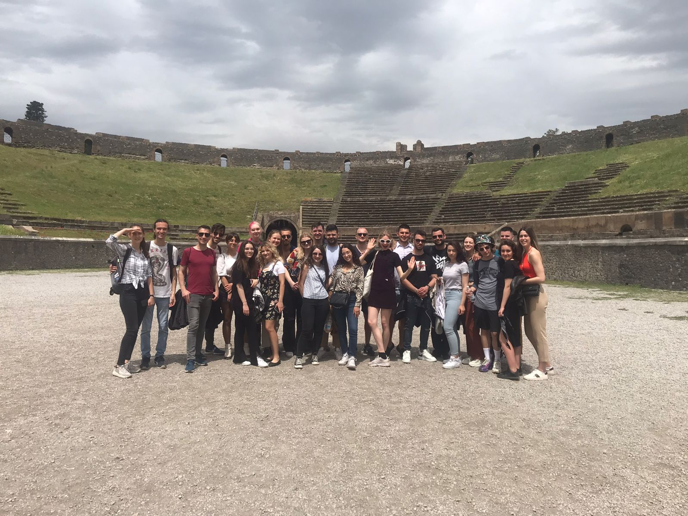

When I was in the 11th grade I went to my first Erasmus+ youth exchange and it was an amazing experinece,
so I kept on going and the latest one was bettween 30th of april and 8th of May 2022.
1. Youth in Policy Dialogue
This was my first project and the only one in Romania,
we had discussions about politics in general and the roles of The European Union
YouthPass 1
2. Youth Exchange - To Eat Not To Stop
This was second project, first one abroad in Lithuania,Kaunas.
The project topic was nutrition and we had workshops around this
and presentations by doctors and nutritionists.
YouthPass 2
3. Youth Exchange - Fill in the blank page
This was my third project,in Nyiregyhaza,Hungary.
We also stayed in Budapest for 3 nights.
The topic was journalism and we had workshops around this
and had to write a few different articles.
YouthPass 3
4. Youth Exchange - EUROPEAN SOLIDARITY- 17.05.2021-25.05.2021
This was my fourth project,in Bansko,Bulgaria.
The topic was the European Union and all the workshops and
activities revolved around getting to understand why the EU exists better.
At the momemnt, I can't find the Youthpass for this one.
5. Youth Exchange - Art as a tool for fighting cyberbullying 30.04.2022-08.05.2022
This is my most recent project in Castellamare di Stabia, Italy.
The main topic was art and cyberbullying, as the main activity was a day when a
local graffiti artist taught us to paint graffiti. We also had different workshops and a trip to Pompeii.
I don't have the YouthPass for this one either, as it was too recent.
I do have a photo from Pompeii though.

6. T.E.A.M. training course
This was my first ever volunteering activity, done in 2017.
It was one for high school students, so they gave us an introduction to what volunteering is about.
Team
This website represents a personal project, it is not to be published
online, only as a private project on git.